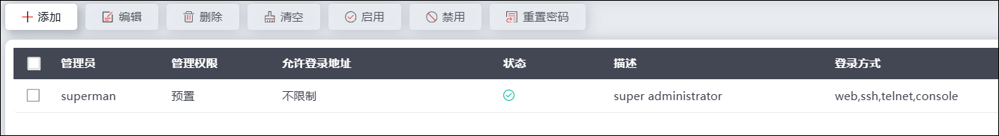
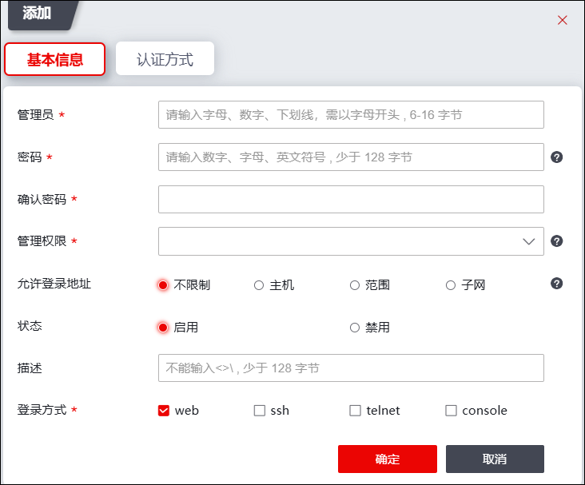

NGFW支持预置管理员管理，也支持新添加的管理员对其进行管理。新添加的管理员的权限由其继承的管理权限模板控制，关于管理权限模板的设置具体请参见 权限模板。
超级管理员可以根据管理员职责范围自定义不同系统配置权限的其他管理员。如果超级管理员在添加管理员时选择管理员类型为“根系统管理员”，这个管理员就是一个全局管理员，可以在授权范围内进行设备的全局配置。创建虚拟系统后，超级管理员可以在添加管理员时选择管理员类型为“虚拟系统管理员”，并为其指定一个已经存在的虚拟系统，创建完成后该管理员即成为该虚拟系统的管理员。虚拟系统管理员无授权能力，只可以在授权范围内管理其关联的虚拟系统的配置。关于虚拟系统的创建具体请参见虚拟系统。
|
²预置管理员不能被删除、被修改权限，预置管理员的操作只限于修改自身密码。 |

| 步骤1 | 选择 ，如下图所示。 |

| 步骤2 | 添加管理员。 |
1）点击“添加”，弹出“添加”窗口，如下图所示。

在添加管理员时，各项参数的具体说明如下表所示。
参数 |
说明 |
|
|---|---|---|
基本信息 |
管理员 |
必填项，设置管理员的管理员名称，需为除“!@#$%^&+=|?\"\\'> <`~”以外的字符。 |
密码 |
必填项，设置管理员名称对应的密码，关于密码的复杂度具体请参见 登录安全策略。 |
|
确认密码 |
必填项，再次输入管理员名称对应的密码。 |
|
管理权限 |
必选项，设置管理员具备管理NGFW的权限。关于管理权限的设置具体请参见 权限模板。 |
|
允许登录IP类型 |
设置允许该管理员登录的IP地址类型信息。分为： 1）主机：主机IP个数最多不能超过2个。支持IPv4和IPv6地址； 2）范围：设置允许登录的IP地址范围； 3）子网：设置允许登录的子网； 4）不限制：不设置任何登录IP限制。 |
|
状态 |
设置管理员账号的启用状态。可选项：启用、禁用。 |
|
描述 |
输入管理员账户的相关描述。 |
|
登录方式 |
选择该账户的登录方式。可选择web、ssh、telnet、console，可多选。 |
|
认证方式 |
认证方式 |
设置该管理员登录系统的认证方式，可选择单因子或双因子认证登录。可选择的认证选项取决于 安全登录策略 的配置，即在配置管理员认证方式之前，需先在 安全登录策略 模块配置认证方式策略。 1）证书认证方式，需选择已导入的本地证书进行绑定；如果绑定的证书未导入到设备中，点击【导入外部证书】后可导入。本地管理员证书的导入，参见 本地证书。 2）密码和证书认证方式，证书配置方法与单因子证书认证相同，登录认证必须同时满足密码认证以及证书认证用户才可以上线。 3）密码和UKey认证方式，UKey是一种通过USB(通用串行总线接口)直接与计算机相连、具有密码验证功能，使用UKey前需要在对应的管理终端上安装相应的驱动程序，驱动安装成功后才可以识别出UKey。获取驱动请联系天融信销售人员。 4）密码+短信认证，在下方手机号配置项输入需要进行登录验证的手机号码。 |
证书名称 |
认证方式包含证书时，需绑定管理员证书。 |
|
2）点击【确定】按钮完成管理员的添加。
| 步骤3 | 启用管理员。 |
选中已有管理员，点击菜单栏中的“启用”，弹出确定启用当前管理员的提示对话框，然后点击【确定】按钮表示该管理员账号启用。
| 步骤4 | 禁用管理员。 |
选中已有管理员，点击菜单栏中的“禁用”，弹出确定禁用当前管理员的提示对话框，然后点击【确定】按钮表示该管理员账号被禁用。在管理员列表中，若管理员账号被禁用，则显示为深灰色。
| 步骤5 | 重置密码。 |
选中已有管理员，点击“重置密码”该账户密码恢复至初始密码。